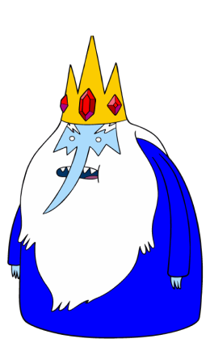
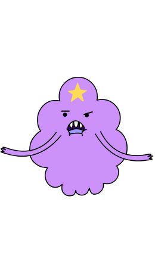

character
main character
finn
- finn
- 어드벤처 타임의 주인공.
- 우 랜드에 존재하는 유일한 인간이다. 정의로운 성품을 지니고 있으며, 영웅이 되는 것이 꿈이다. 또다른 주인공인 제이크와 함께 나무집에서 살고 있다. 성격은 매우 쾌활한 편이며, 악을 무찌르고 남을 돕는 것과 모험을 매우 좋아한다. 그 외에 노는 것과 노래하고 춤추는 것도 좋아하는 편. 또한 겉보기와는 달리 은근히 강력한 전투력의 소유자이기도 하다.
jake
- jake
- 어드벤처 타임의 주인공.
- 종족은 마법 개. 핀과는 형제와 같은 사이. 핀과 함께 나무집에서 살고 있다. 아기일 적에 숲속에 버려졌던 핀을 제이크의 부모님이 데려다 키운 이후로 핀과 함께 살고 있다. 몸을 자유자재로 늘릴 수 있는 마법을 사용한다. 쾌활한 성격이며, 모험하는 것과 남을 돕는 것을 좋아하기에 핀과 함께 모험을 좋아한다.
sub character
-
Bubblegum
어드벤처 타임의 등장인물 핀과 제이크와 가장 가까이 지내고 있는 공주. 핀은 버블검 공주를 짝사랑하고 있었으나, 버블검 공주는 친구로서 좋아할 뿐이다.버블검이라는 이름에 걸맞게 온몸이 풍선껌으로 되어 있다.
-

Ice King
어드벤처 타임의 등장인물 핀과 제이크의 숙적. 펭귄과 눈 괴물들이 살고 있는 얼음나라를 다스리는 왕이다 극중 가장 자주 등장하는 악당이다. 왕관에서 나오는 마법의 힘을 사용해서 다양한 능력을 사용할 수 있다.
-
Marceline
어드벤처 타임의 등장인물 핀의 친구. 종족상 인간, 악마, 뱀파이어 혼혈이다. 우 랜드의 구석에 위치한 동굴속의 집에서 혼자 살고 있다. 5개의 특수능력을 가졌으며, 뱀파이어답게 피를 빨아먹을 수도 있지만, 피보단 빨간색을 빨아먹는 것을 선호한다.
-
Rainicorn
어드벤처 타임의 등장인물 제이크의 여자친구. 하늘을 날아 다닐 수 있다. 머리에 달린 뿔로 물체의 빛깔을 마음대로 바꿀 수 있는 능력을 지니고 있다. 그 외에도 신비로운 능력을 지니고 있다. 제이크의와 무지개콘 사이에 5명의 자녀도 있다.
-

LSP
어드벤처 타임의 등장인물 덩어리 세계의 공주로, 본국인 덩어리 세계는 우 랜드가 아닌 다른 차원의 존재다. 그러나 차원을 연결하는 포탈을 통해 양쪽 세계를 넘나들며 살고 있는 듯하다. 또한 주인공인 핀과 제이크의 친구이기도 하다.
-
beemo
어드벤처 타임의 등장인물 주인공인 핀과 제이크와 함께 나무집에서 살고 있는 룸메이트이자 친구. 비록 기계이지만 인공지능을 갖고 있어 살아있는 생물처럼 행동하고, 대화도 가능하며 심지어 감정도 지니고 있다. 표정도 상당히 다양하다.